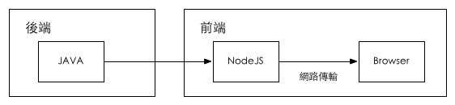

JS全端开发
前后端分离实践
Created by 蔺文龙
分享内容
- 聊聊全端开发和全端工程师的情怀
- 全端开发为什么要前后端分离？
- 全端开发怎样做前后端分离？
- 分离后每一层怎样处理？
小调查
JS全端开发？
- 我们用 JavaScript 写前端，用 Node.JS 写后端，甚至使用基于 JSON 的 NoSQL数据库;
- 这里没有前/后端的区隔, 没有沟通问题, 也没有扯皮
- 我们关注MVC、Cache、ORM、BigPiper、性能优化、架构设计、移动跨屏...
- 我们参与设计、后台开发、前端开发、移动开发、运营维护、PS、文案...
我们是高端、大气、上档次的
全端工程师
也叫全栈（Full Stack）工程师
看起来,很牛(ku)逼的样子！
其实真相是这样的！

如何成为全端工程师？
- 发现问题，洞察需求，设计解决方案，并开发出初始版本的产品
- 为了达到目标，愿意去学习任何领域的技能和知识
- 如：后端开发、前端开发、界面设计、产品设计、数据库、各种移动客户端、三屏兼容、restFul API设计、OAuth、SPA、Web Socket、HTML5/CSS3、微信公众号、微博应用等等...
困惑？
成为全端工程师不是为了工作本身，是为了方便实现自己的梦想。
逼格不低啊！
Design and building a team or a company which builds great products.

进入主题
后端MVC时代
前端？== 套页面
携手合作
The Problems
前端代码越来越复杂
- 无法统一协作模式，代码充满了约定
- JS跟CSS，依赖于后端产出的HTML
- 有的数据来自AJAX，有的数据印在DOM上
- 有的业务逻辑在前端，有的在Model层，更多的是在View层
前后端依旧高度耦合
- 前端依赖服务端开发环境
- 在服务端View层高度耦合
- 沟通成本高
- 职责不清晰
View层谁来维护？
- 前端写Demo，后端套页面
- 后端需要写HTML
- 前端仍然确认后端写的HTML
- 前端写View层，后端只管数据
- 前端需要熟悉后端语言
- 前端需要了解后端架构
无法良好的支持跨终端
- 业务逻辑散落在应用中
- 渲染逻辑强依赖后端页面
- 只能用responsive design硬来
高度耦合的前后端分工
- 沟通成本上升
- 维护成本上升
- 无法正确且快速的响应变化
- 代码的腐烂只是迟早的问题

Client-side MV* 时代
接口分离, 后端提供数据, 前端自己搞
Model层 - JavaScript Object
View层 - JavaScript Template
业界的优秀方案
AngularJS, Backbone, EmberJS, KnockoutJS, React, etc.
前后端职责清晰了
| 后端 | 前端 |
|---|---|
|
|
分离干净了，分工明确了，但是...
The Problems
各层职责重叠，并且各玩各的
- Client-side Model 是 Server-side Model 的加工
- Client-side View 跟 Server-side是 不同层次的东西
- Client-side的Controller 跟 Sever-side的Controller 各搞各的
- Client-side的Route 但是 Server-side 可能没有
重用问题
- 模版无法重用，造成维护上的麻烦与不一致
- 逻辑无法重用，前端的校验后端仍须在做一次
- 路由无法重用，前端的路由在后端未必存在
跨终端问题
- 业务太靠前，导致不同端重复实现
- 逻辑太靠前，造成维护上的不易
SEO问题
渲染都在客户端，模版无法重用，SEO实现 麻烦
有点沉重啊
敢不敢有个解决方案？
因為有了NodeJS
我们有机会从工作职责上
重新定义前后端的分层
重新定义的前后端
基于NodeJS全端开发

淘宝基于NodeJS的前后端分离
前端的工作量是否增加了？
一些实践
Front-end Skills
中间件定制平台

“中间件定制平台”项目中用到的Skills
前端工程
1、纯静态的前台工程，不依赖web server，可独立工程、独立开发
2、开发过程使用JSON file/MockJS，通过配置切换Angular Service数据源
window.__service.factory('templateRES',function($resource) {
var url = framework.getFinalURL('api/template/:method/1','../template/api/:method.json');
var json = $resource(url,{});
return json;
});
3、使用AngularJS，构建完善的前端MVC，简单高效的实现业务逻辑

4、使用Bootstrap做UI框架，使用Angular封装过的KendoUI/jQWidgets等UI组件，实现复制交互控件
4-2、组件的封装和组织
4-3、组件的HTML化使用

4-4、组件的MVC化控制
后端工程
1、Sequelize实现ORM，简化数据库开发工作量
module.exports = function (sequelize, DataTypes) {
var WebSite = sequelize.define('Website', {
name: DataTypes.STRING,
status: DataTypes.INTEGER
}, {
tableName: 'bf_website',
timestamps: false
});
return WebSite;
}
1-2、Sequelize的Models
function Website(_) {
_ = _ || {};
this.id = _.id || 0;
this.status = _.status || 0;
this.name = _.name || '';
}
Website.findById = function (callback) {
Website.find({ where: {'id': this.id } } ).complete(function (err, obj) {
callback(err, obj);
});
};
Website.prototype.save = function(callback) {
Website.create(this).complete(function (err, obj) {
callback(err, obj);
});
};
module.exports = Website;
2、使用LinqJS，进一步简化ORM对象的操作
var Enumerable = require('linq');
var xpath = Enumerable.from(xpathArr)
.select(function(xpath){
if(xpath.name == inputs.xpath.name){
xpath = 'new value';
}
return xpath;
}).toArray();
3、使用ThenJS，直观管理数据库的多表操作
then(function(defer){
WebsiteDomain.del(inputs.ids , defer);
})
.then(function(defer, value){
Xpath.delByDomainId(inputs.ids, defer);
})
.all(function (defer, err) {
if(!err){
callback(null, {
code: '00',message: 'success.'
});
}
}).
fail(function (defer, err) {
callback(null, {
code: '01',message: err
});
});
4、自行开发的API系统（Model Proxy?）,使NodeJS后端服务化，直接向前端开放业务接口
4-2、API的调用
实践中的全端开发技术家族
总结一下
全端工程师，就是掌握多种技能，并能利用多种技能独立高效的完成产品的人。
Design and building a team or a company which builds great products.